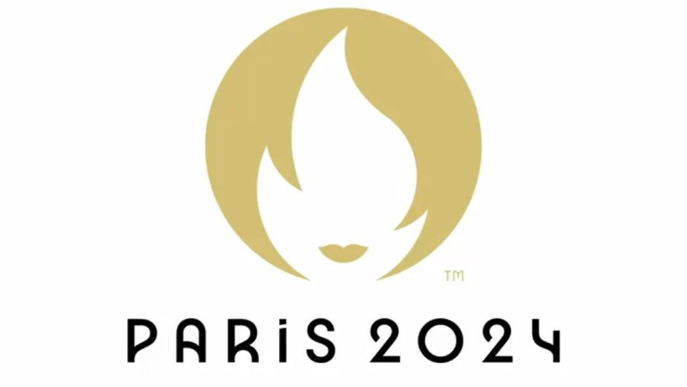

Se déroulant du 26 juillet au 11 août 2024, les Jeux Olympiques et Paralympiques de Paris 2024 seront le plus grand événement jamais organisé en France. Moments prometteurs d'exploits sportifs et d'accomplissements humains jamais vus auparavant, cet événement historique sera au centre du calendrier sportif et culturel mondial en 2024.
Paris 2024 accueillera 13 millions de spectateurs sur 35 sites de compétition et offrira une audience mondiale à travers plus de 100 000 heures de couverture télévisée. Organisés pour la dernière fois en 1924, les Jeux Olympiques et Paralympiques de Paris 2024 représentent le centenaire des Jeux Olympiques de Paris et seront le plus grand événement sportif au monde.
